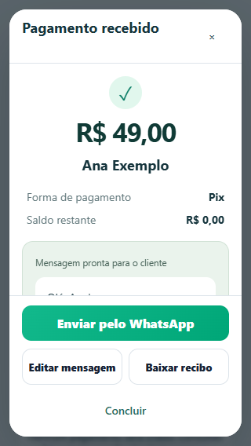
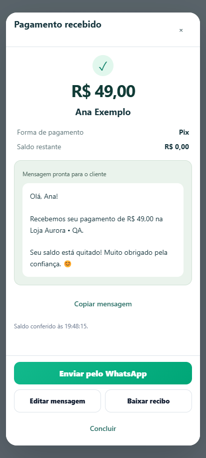
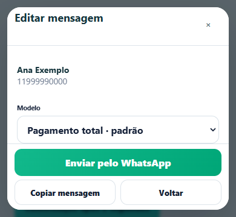
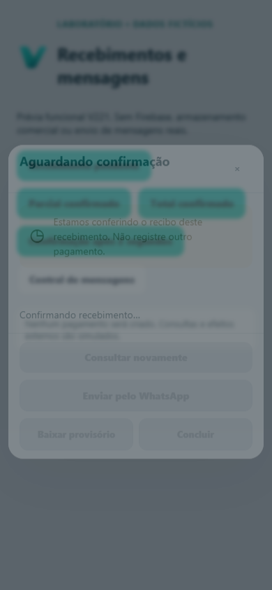
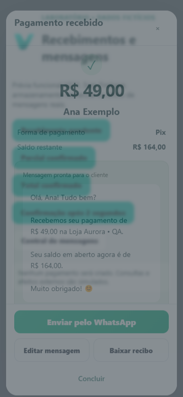
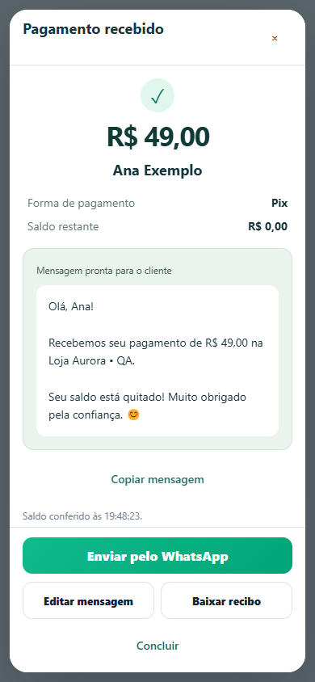
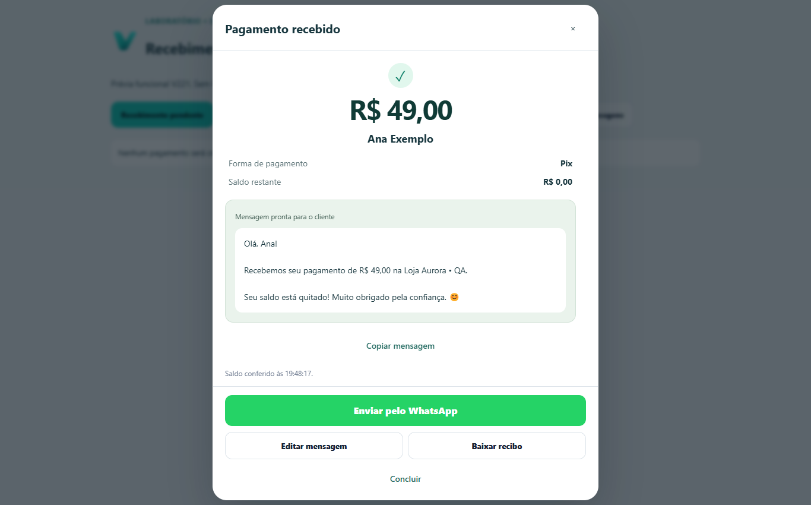

V221 · Pagamento recebido
Capturas reais do Chromium QA com dados 100% fictícios, fontes e CSS do aplicativo. Nenhum pagamento real ou WhatsApp externo foi executado.
Mensagem pronta e ação principal em largura total.
320 px: rolagem interna, sem palavras quebradas nos botões.
Viewport de 412 px usada para validar o layout do S24 Ultra.
Mensagem individual editável e ações acessíveis com altura reduzida.
Pendente: confirmação somente leitura, sem alegar quitação.
Parcial: modelo e saldo confirmados do cliente.
Rede indisponível: erro claro e controles restaurados.
Desktop preservado, com a mesma hierarquia de ações.